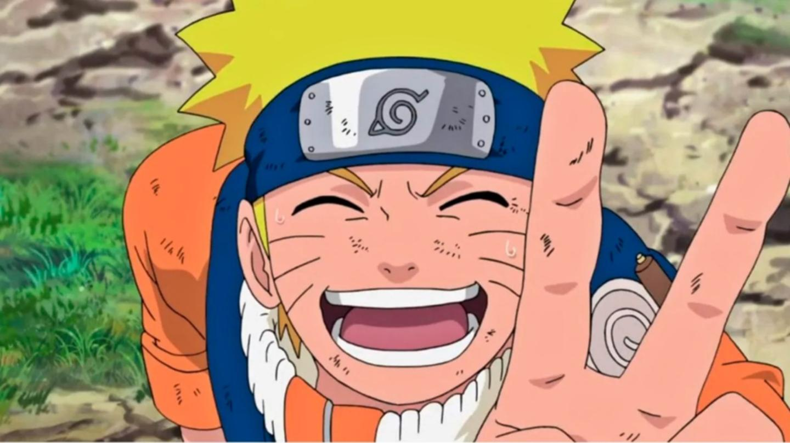
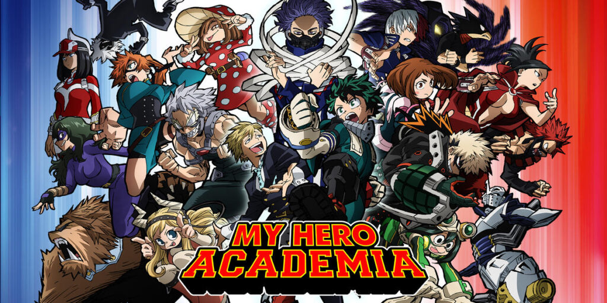

Naruto Uzumaki (うずまきナルト, Uzumaki Naruto) es el protagonista de la serie del manga y anime Naruto y Naruto Shippūden.
Asimismo es partícipe del manga y anime Boruto: Naruto Next Generations, secuela de la obra original de Masashi Kishimoto.
Es residente de Konohagakure, hijo del Cuarto Hokage, Minato Namikaze y su esposa Kushina Uzumaki, además de ser la actual reencarnación de Asura Ōtsutsuki.

Continuando con la adaptación del manga, la serie narra la aventura de la vida adulta de Son Goku quien, con sus compañeros defiende la tierra contra varios villanos. Mientras que la serie original, Dragon Ball, narra la historia de la infancia hasta la adultez, Dragon Ball Z es la continuación de la vida adulta que lleva Goku, paralelamente narra la madurez de su hijo, Gohan.

My Hero Academia es una serie de manga escrita e ilustrada por Kōhei Horikoshi. Se basa en un one-shot realizado por el mismo autor y publicado en el quinto volumen del manga Ōmagadoki Dōbutsuen bajo el nombre de My Hero. El 11 de enero de 2015, fue lanzado un VOMIC basado en el manga.
